Natural disasters • Grid defense • Late-game hazard hardening
Custom C# components patch vanilla events to keep your power grid running through everything the Rim throws at it. Pairs naturally with Homesteader batteries and generators.
Seventeen tools for a disaster-hardened colony — plus one purely decorative weather vane.
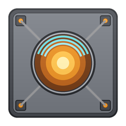
A field generator that keeps every electrical device on the map running during a solar flare by drawing 2,500W continuously. Stockpile battery charge before the sky goes red — if the grid runs dry mid-flare, the shield collapses and everything stays dark until the flare ends.
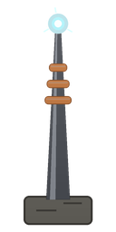
Attracts lightning strikes within a wide radius, keeping fires away from your base. The spire cannot burn and snuffs out any flames a caught strike sparks around its base. Off-grid: safe, boring protection. Grid-connected: each strike dumps up to 1,500 Wd into your capacitors and batteries — with a 5% chance of triggering a “Zzzt!” surge, eliminated entirely by perfect grounding research.
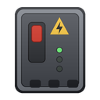
Absorbs one “Zzzt!” short circuit, then needs a day to recharge and takes internal damage. Pairs dangerously well with a grid-connected storm spire.
Colony buildings in range shrug off EMP stuns. Turrets keep firing through EMP mortar barrages. Does not protect pawns or mechanoids.
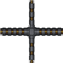
Power conduit sheathed in riveted steel. Fireproof and far tougher than standard conduit — the wiring of choice for killboxes and exterior walls.
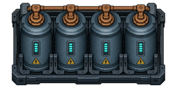
A lightning-only battery. The grid can't charge it — only spire-caught strikes can — but in return it never self-discharges and “Zzzt!” surges can't drain it. When grid production falls short it automatically discharges up to 2,000W to cover the deficit. Spires fill capacitors before regular batteries.
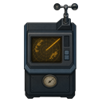
Shows how long the current weather will hold, announces incoming thunderstorms so you can ready your spires, and warns you an hour before the weather breaks.
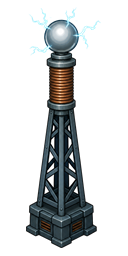
Runs exclusively on bottled lightning: every shock drains 50 Wd from a storm capacitor bank on its power net, repeatedly stunning and burning raiders and mechanoids in its radius. No capacitor charge, no zap.
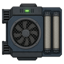
Strips airborne toxins from an enclosed room. Pawns and animals inside slowly shed toxic buildup, faster than serious fallout adds it.
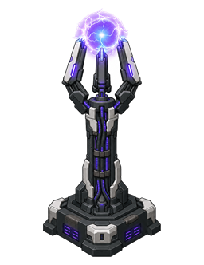
An ionospheric agitator that summons a rainy thunderstorm on demand: lightning to feed your storm spires, rain to douse wildfires. Half-day storm, five-day recharge — a supplement to your grid, not a replacement for it.
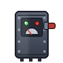
An automatic breaker for wiring between the main grid and a low-priority sub-grid. Transmits like a conduit while supply batteries hold charge; trips open and sheds the sub-grid when they fall below the cutoff (default 20%), then reconnects on its own once they recover.
Live production, consumption, battery charge, and time until the batteries run dry (or fill up) in its inspect panel. Warns at 25% stored charge, sounds the alarm at 10%.
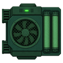
Map-wide toxin hardener. Suppresses toxic fallout, toxic surge, volcanic ash, and noxious haze while the grid holds charge. Pair with fallout scrubbers to clear buildup already in the blood.
Cancels temperature offsets from heat waves, cold snaps, volcanic winters, heat domes, and polar fronts — as long as batteries can feed it.
Restores usable daylight during eclipses, volcanic winters/ash, and darkened skies so crops and colonists aren't stuck in permanent dusk.
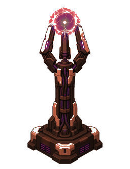
Extinguishes fires in a wide radius while powered. Pairs with storm spires during flashstorms and dry lightning fronts.
Cancels drought plant-growth penalties map-wide while powered. Most useful with Odyssey grasslands droughts.
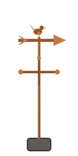
A handsome copper weather vane. It doesn't predict anything, prevent anything, or power anything. But every proper homestead has one.
Industrial grid tools, spacer storm control, and a late-game hazard hardening capstone.
| Building | Cost | Power | Research |
|---|---|---|---|
| Storm spire | 80 steel, 1 component | 5W idle | Storm protection |
| Surge protector | 50 steel, 2 components | 25W | Storm protection |
| Armored conduit | 3 steel/tile | — | Storm protection |
| Weather forecaster | 40 steel, 2 components | 100W | Storm protection |
| Storm capacitor bank | 80 steel, 10 plasteel, 3 components | discharges up to 2,000W | Storm protection + Batteries |
| Load shedder | 40 steel, 1 component | — | Storm protection |
| Grid monitor console | 40 steel, 2 components | 75W | Storm protection |
| Solar shield | 150 steel, 40 plasteel, 6 components, 1 advanced component | 100W idle / 2,500W active | Flare shielding |
| EMP dampener | 60 steel, 10 gold, 3 components | 150W | Flare shielding |
| Static discharge pylon | 50 steel, 5 gold, 2 components | 200W | Flare shielding |
| Fallout scrubber | 60 steel, 3 components | 150W | Flare shielding |
| Storm caller | 120 steel, 60 plasteel, 4 components, 2 advanced components | 400W | Atmospheric control |
| Atmospheric barrier | 180 steel, 80 plasteel, 6 components, 3 advanced | 200W / 2,000W | Hazard hardening |
| Climate stabilizer | 160 steel, 70 plasteel, 5 components, 2 advanced | 150W / 1,800W | Hazard hardening |
| Sky restorer | 140 steel, 60 plasteel, 80 silver, 4+2 components | 150W / 1,500W | Hazard hardening |
| Fire suppressor | 90 steel, 30 plasteel, 4+1 components | 50W / 800W | Hazard hardening |
| Drought condenser | 100 steel, 25 plasteel, 4+1 components | 100W / 1,200W | Hazard hardening |
| Storm vane | 25 steel | — | None |
Custom Harmony patches and components power the behaviors vanilla can't do in XML alone.
While active, the solar shield patches the global electricity-disabled flag so your colony keeps running — as long as the grid can feed 2,500W.
The storm spire intercepts lightning strikes in range and sweeps its base clear of fire for a few seconds after each hit. Wired spires charge capacitors first, then batteries; unwired spires simply ground the bolt safely.
The forecaster reads the map's weather engine directly — its inspect panel shows exactly how long the current weather will last, and it pings you when storms roll in or the weather is about to break.
The storm caller transitions the map's weather to a rainy thunderstorm and pins it there for half a day — feeding every spire and pylon you own.
The surge protector catches one short-circuit event per recharge cycle, saving your batteries from a cascade of explosions.
The EMP dampener patches building stun logic so turrets, doors, and production buildings inside its radius ignore EMP effects.
The load shedder watches its supply grid's battery charge and rewires the power net on the fly — shedding the sub-grid below the cutoff, reconnecting once charge recovers past a hysteresis margin so it never chatters.
A new small-threat event (0.75–1.5 days): batteries bleed ~20% of stored charge per day, random EMP bursts pop at powered buildings, and extra “Zzzt!” surges fire. EMP dampeners, surge protectors, and storm capacitor banks are the counters.
Late-game buildings cancel toxic fallout, extreme heat/cold, eclipses, flashstorm fires, and drought growth penalties while they have grid power — the same solar-shield fantasy applied to most natural incidents.
Heat dome, polar front, toxic surge, and dry lightning front each pressure a different counter. Vanilla fallout, heat/cold, eclipse, volcanic winter, flashstorm, and drought are covered too once hazard hardening is online.
Stormproof folder into your RimWorld Mods directory.